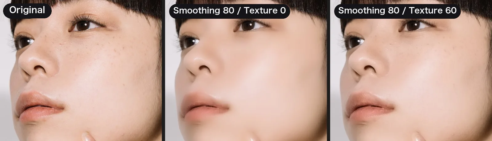

Skin Retouch Texture in Premiere Pro: Fix the Flat, Plastic Look
Skin retouching can leave skin flat, like a smooth surface with no pores. This article explains why that happens and how to bring the texture back, first with Premiere Pro's built-in tools and then with a plugin.
I am a video editor in Japan (music videos, interviews and commercials) and the developer of Totonoe Skin Retouch, the plugin in the second half.
Short answer
Skin goes flat when the amount you blur is larger than the amount of fine texture you keep. The fix is to blur less, or to put texture back after blurring.
- In Premiere Pro, make the negative Sharpen value smaller and lower Blur in Lumetri Color HSL Secondary.
- In a plugin, raise Texture as much as you raise Smoothing. If the whole retouch is still too strong, lower Amount.
Three causes of flat skin
1. The blur removes pores and skin grain as well
Skin smoothing blurs color unevenness, and it blurs the fine bumps of pores and skin grain at the same time. Once the small shadows made by those bumps are gone, the skin looks flat.
2. The retouch is too strong
The more you smooth, the less texture is left. If you widen the blur without putting texture back, the skin looks painted.
3. Wide shots and close-ups get the same strength
Skin texture is visible in a close-up, but in a wide shot you barely see it. Applying a close-up's strength to a wide shot flattens the skin more than it needs to.
Fix it in Premiere Pro
If you smooth skin by selecting the skin color with HSL Secondary in Lumetri Color and setting Sharpen to a negative value, review it in this order. The selection steps are in How to Retouch Skin in Premiere Pro.
- Under Correction, make the negative Sharpen value smaller. If it was -50, try -30.
- Under Refine, lower Blur.
- View at 100% zoom and compare with the footage before correction.
A negative Sharpen blurs the whole selection evenly, so the amount of blur and the loss of texture move together. That is why it is hard to adjust only the flat look with this method.
Fix it with a plugin: Smoothing and Texture
Totonoe Skin Retouch is a skin retouch plugin for Premiere Pro and After Effects. It has one slider for how much the skin is smoothed (Smoothing) and a separate slider for how much texture is put back afterwards (Texture), so you can change one without the other.
The image below uses the same photo three times. Smoothing is 80 in both retouched versions. Only Texture differs, 0 in the middle and 60 on the right. It was made with the plugin's own processing, starting from the Standard preset.

To see how Smoothing and Texture behave on your own footage, use the free trial. It has every feature of the full version; the only difference is a faint diagonal-stripe watermark on the video.
What to adjust, in order
- Raise Texture. When you raise Smoothing, raise Texture with it.
- If it still looks too strong, lower Amount. Amount scales Smoothing, De-Shine, Blemish, Redness and Paleness together. At 0% the video is the same as the original.
- To let some of the original footage show through, lower Output Mix. At 100% you see the retouched result only, and the lower it goes, the more of the original is mixed in.
- If you are not sure, choose the Natural preset. It keeps the most texture of the three presets.
The presets set these values:
- Natural: Smoothing 25, Texture 60
- Standard (default): Smoothing 50, Texture 40
- Strong: Smoothing 80, Texture 30 (it also sets De-Shine 25, Blemish 25 and Redness 8)
Amount and Output Mix both weaken the retouch. Amount lowers the strength of the retouch itself, and Output Mix blends the finished result with the original video.
For close-ups and wide shots, change Amount per clip. Every parameter is explained in the user guide.
Limits
The plugin detects skin by color, so everyone with a similar skin tone in the shot is retouched. If a background or clothing with a skin-like color is affected, turn on Show Mask and narrow Hue Range. Log footage needs a Rec.709 conversion before the effect. This version does not run in DaVinci Resolve, Final Cut Pro or Avid. The DaVinci Resolve version is a separate product (Mac only).
It is a one-time purchase of ¥9,800 (about US$65) on BOOTH and works in Premiere Pro and After Effects 2025 or later on Mac (macOS 13 or later) and Windows (CPU only). Everything is processed on your computer, so your footage is never sent to a server.
Related articles: How to Reduce Skin Shine in Premiere Pro / How to Check Flickering Skin Retouch / How to Retouch Skin in After Effects
FAQ
Why does skin look flat or plastic after smoothing?
Smoothing blurs color unevenness and also the fine bumps of pores and skin grain. When those small shadows disappear, the skin looks flat. A strong setting, or the same strength on wide shots and close-ups, makes it worse.
How do I keep skin texture in Premiere Pro without a plugin?
If you smooth skin with a negative Sharpen inside an HSL Secondary selection, make the negative value smaller (for example from -50 to -30) and lower Blur in Refine. Compare with the footage before correction at 100% zoom.
What does Texture do in Totonoe Skin Retouch?
Texture adds back the fine detail (pores and skin grain) that Smoothing removed. It ranges from 0 to 100 and defaults to 40. When you raise Smoothing, raise Texture with it.
What is the difference between Amount and Output Mix?
Amount lowers the strength of the retouch itself (Smoothing, De-Shine, Blemish, Redness and Paleness together; 0% equals the original). Output Mix blends the retouched result with the original video; at 100% you see the retouched result only.